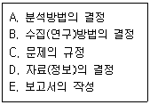
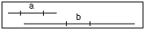
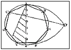
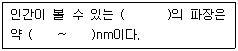
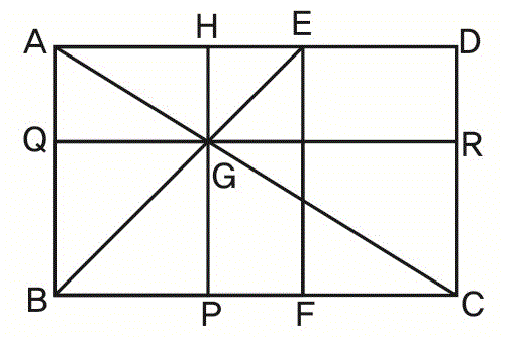
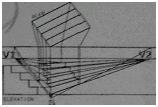

컴퓨터그래픽스운용기능사 (2010-01-31 기출문제)
1과목: 산업디자인 일반
1. 클립아트(Clip Art)에 대한 설명으로 가장 적합한 것은?
- 페이지를 인쇄한 뒤에 접착제로 첨부된 일러스트레이션이다.
- 문서를 작성할 때 편리하게 이용할수 있도록 모아 놓은 여러가지 조각 그림이다.
- 텍스트와 이미지가 인쇄용 최종 도판에서 레이아웃 되면서 붙여지는 제작과정이다.
- 도판이 요구하는 크기나 내용에 따라 그림의 불필요한 가장자리 부분을 잘라내는것이다.
(정답률: 80%)

2. 다음 중 대중문화의 상징적인 표현으로 연관된 그룹은?
- 팝 그룹
- 아르키타이프 그룹
- 의미전달 그룹
- 하이테크 그룹
(정답률: 86%)
3. DM(Direct Mail) 광고의 설명 중 틀린것은?
- 시기와 빈도를 자유롭게 조절한다.
- 특정한 대상이 읽을 수 있도록 할 수 있다.
- 구매 장소에서 직접적인 판매촉진 효과가 있다.
- 소비자에게 직접 우송하는 광고 방법이다.
(정답률: 79%)
4. 동적이고 불안정한 느낌을 주지만 사용에 따라 강한 표현을 나타낼 수 있는 선은?
- 곡선
- 수평선
- 포물선
- 사선
(정답률: 85%)
5. 다음 중 형태에 관한 설명으로 틀린것은?
- 점이 확대되면 면으로 이동되고, 원형이나 정다각형이 축소되면 점이 된다.
- 점이 일정한 방향으로 진행할 때 곡선이 생기며, 점의 방향이 끊임없이 변할 때 직선이 생긴다.
- 면은 길이와 폭을 가지며, 넓이는 있으나 두께는 없다.
- 입체는 길이, 너비, 깊이, 형태와 공간, 표면, 방위, 위치 등을 가지며 평면의 확장이다.
(정답률: 74%)
6. 다음 중 실내디자인의 설명으로 틀린 것은?
- 실내디자인은 장식적 특성이 가장 중요하다.
- 인간의 정서함양과 나은 삶의 가치를 승하시키는데 목적이 있다.
- 인간생활과 물리적, 심리적, 미적 기능을 만족시켜야 한다.
- 심미성과 기능성이 동시에 이루어져야 한다.
(정답률: 80%)
7. 아래의 내용은 마케팅 조사 절차이다. 순서대로 바르게 배열한것은?

- C-B-A-D-E
- D-C-B-A-E
- C-D-B-A-E
- D-B-A-C-E
(정답률: 58%)
8. 빛 전부를 천정이나 벽면에 투사하여 그 반사광으로 조명하는 방법으로, 은은한 빛이 골고루 비치나 조도가 균일하여 침실이나 병실에 적당한 조명은?
- 간접조명
- 국부조명
- 전반조명
- 직접조명
(정답률: 88%)
9. 아이디어를 발전시키키 위하여 형태, 구조, 재료, 가공법 등을 개략적으로 그리고 포착된 이미지를 하나하나 비교 검토하기 위한 스케치는?
- 섬네일 스케치
- 스크래치 스케치
- 러프 스케치
- 스타일 스케치
(정답률: 59%)
10. 다음 중 영상 디자인 분야에 속하는 것은?
- 애니메이션
- P.O.P
- 카탈로그
- 포스터
(정답률: 94%)
11. 시지각 원리에 근거를 둔 추상적, 기계적인 형태의 반복과 연속 등을 통한 기각적 환영, 지각, 색채의 물리적 및 심리적 효과와 관련된 사조는?
- 아르누보
- 팝아트
- 옵아트
- 유켄트스틸
(정답률: 61%)
12. 오즈번(Alex Osborn)에 의해 창안된 회의방식으로 디자인에서 널리 사용되고 있는 그룹 형태의 아이디어 발상법은?
- 브레인 스토밍법
- 시스템 분석법
- 요소간 상관분석법
- 체크리스트법
(정답률: 90%)
13. 다음 중 러프목업 모델로 볼 수 없는 것은?
- 더미 모델
- 스터디 모델
- 스케치 모델
- 스킴 모델
(정답률: 49%)
14. 포장 디자인의 기능에 속하지 않는 것은?
- 보호와 보존성
- 단위포장
- 편리성
- 상품성
(정답률: 67%)
15. 마케팅 조사에 대한 설명 중 가장 거리가 먼 것은?
- 상품이나 서비스의 마케팅과 관련된 내용을 다룬다.
- 자료를 체계적으로 수립, 기록, 분석해야 한다.
- 자료는 객관적이면서 정확하게 수집, 기록, 분석되어야 한다.
- 편리하고 접근이 용이한 자료만을 확보하여야 한다.
(정답률: 85%)
16. 아래의 그림 a.b는 같은 길이와 크기이지만, 다르게 보이는 것은 어떤 현상 때문인가?

- 분할착시
- 유화착시
- 반전착시
- 대비착시
(정답률: 60%)
17. 제품 설계에서 재활용 가능성의 배려 등 환경을 고려한 디자인은?
- 그린 디자인
- 공공복지 디자인
- 미래의 디자인
- 의상 디자인
(정답률: 91%)
18. 굿 디자인(Good Design)의 조건이 아닌것은?
- 독창성
- 복합성
- 경제성
- 합목적성
(정답률: 80%)
19. 게슈탈트(Gestalt) 원리가 아닌것은?
- 폐쇄성
- 인접성
- 유사성
- 반복성
(정답률: 52%)
20. 실내디자인 과정 중 정보수집 및 분석이 이루어지는 단계는?
- 시공단계
- 사용 후 평가단계
- 설계단계
- 기획단계
(정답률: 77%)
2과목: 색채 및 도법
21. 다음 그림과 같은 작도법은?

- 한 변이 주어진 임의의 정다각형
- 원에 내접하는 임의의 정다각형
- 원의 중심 구하기
- 다각형에 외접하는 원그리기
(정답률: 75%)
22. 다음중 ( ) 안에 들어갈 내용을 알맞게 짝지은 것은?

- 적외선, 560~960
- 가시광선, 380~780
- 적외선, 380~780
- 가시광선, 560~960
(정답률: 84%)
23. 색채의 대비현상에 관한 설명으로 틀린 것은?
- 색채가 클수록 강해진다.
- 대비되는 부분을 계속해서 보면 대비효과가 적어진다.
- 두 색 사이에 무채색 테두리를 두르면 대비효과가 커진다.
- 자극과 자극 사이의 거리가 멀어질수록 대비현상이 약해진다.
(정답률: 59%)
24. 색명법에 의한 일반색명과 관용색명에 관한 설명 중 잘못된 것은?
- 일반색명은 계통색명이라고도 한다.
- KS규격에서 일반색명 중 유채색의 기본 색명은 오스트발트 10색상에 준하여 색명을 정하였다.
- 관용색명은 관습적으로 쓰이는 색명으로서 식물, 광물, 지명 등을 빌어서 표현한다.
- KS 규격에서는 일반색명으로 나타내기 어려운 경우에 관용색명을 쓰도록 하였다.
(정답률: 67%)
25. 투상면이 공간에 있는 물체보다 앞에 있어 기준이 "눈→화면→물체" 의 순서로 투상하는 방법은?
- 제 1 각법
- 제 2 각법
- 제 3 각법
- 제 4 각법
(정답률: 74%)
26. 삼각자 2조로 만들 수 있는 각도가 아닌것은?
- 15°
- 45°
- 65°
- 75°
(정답률: 63%)
27. 다음 중 관용색명이 아닌 것은?
- 회황색
- 라일락색
- 병아리색
- 프러시안블루
(정답률: 65%)
28. 색채의 조화에서 공통되는 원리와 거리가 먼 것은?
- 질서의 원리
- 비모호성의 원리
- 동류의 원리
- 색채조절의 원리
(정답률: 44%)
29. 교통표지판의 색상을 결정할 때에 가장 고려해야 할 사항은?
- 심미성
- 경제성
- 양질성
- 명시성
(정답률: 88%)
30. 어떤 두 색이 맞붙어 있을 때 그 경계 언저리에 대비가 더 강하게 일어나는 현상은?
- 면적대비
- 한난대비
- 보색대비
- 연변대비
(정답률: 68%)
31. 오스트발트 표색계의 색채 개념은?
- Red+Green+Blue=100%
- White+Black+Color=100%
- Red+Yellow+Blue=100%
- White+Blue+Green=100%
(정답률: 61%)
32. 다음 색채의 일반적인 성질 중에서 보색 관계는?
- 청색과 탁색
- 유채색과 무채색
- 고명도와 저명도
- 한색과 난색
(정답률: 73%)
33. 다음 중 투시도법에 대한 설명으로 틀린 것은?
- 시점과 물체를 연결한 투사선을 이용하여 물체의 상을 화면에 그리는 도법이다.
- 긴 복도, 곧게 뻗은 철길, 가로수 등이 평행 투사의 예이다.
- 유각투시는 지면과 투상면에 대해 육면체의 각 면이 각기 임의의 경사를 가진다.
- 3개의 소점에 의한 투시도를 3점 투시 또는 조감도법이라 한다.
(정답률: 52%)
34. 다음 그림은 황금분할된 그림이다. 황금비가 아닌 것으로 연결된 변은?(그림이 잘 보이지 않습니다. 정답은 ‘라’번입니다. 추후 그림파일을 변경해 두겠습니다.)

- AB : BC
- GP : PC
- AQ : QG
- QB : BC
(정답률: 83%)
35. 먼셀 색상환의 5주요색이 아닌 것은?
- Orange
- Red
- Blue
- Purple
(정답률: 82%)
36. 유사 색조의 배색에서 받는 느낌은?
- 강함, 똑똑함, 생생함, 활기참
- 평화적임, 안정됨, 차분함
- 동적임, 화려함, 적극적임
- 예리함, 자극적임, 온화함
(정답률: 83%)
37. 색의 온도감에 대한 설명 중 틀린 것은?
- 난색은 따뜻한 느낌을 주고, 한색은 차가운 느낌을 준다.
- 무채색에 있어서 저명도는 따뜻한 느낌을 주고, 고명도는 찬 느낌을 준다.
- 난색계의 색은 자극적이고, 한색계의 색은 조용하고 정적 느낌을 준다.
- 노랑, 주황, 빨강 계열을 한색이라 하고, 파랑 계열의 색을 난색이라 한다.
(정답률: 70%)
38. 다음 그림과 같은 투시도는?

- 평행 투시도
- 유각 투시도
- 등축 투시도
- 경사 투시도
(정답률: 56%)
39. 다음 중 A3 제도용지 규격으로 옳은 것은?
- 210×297mm
- 297×420mm
- 594×841mm
- 841×1189mm
(정답률: 84%)
40. 지형의 높고 낮음을 지도 위에 표시하는 것과 같이 기준면을 정하고, 기준면에 평행한 평면을 같은 간격으로 잘라 평화면상에 투상한 수직 투상은?
- 정투상법
- 축측 투상법
- 표고 투상법
- 사투상법
(정답률: 58%)
3과목: 디자인 재료
41. 다음 중 도장 방법에 따른 분류가 아닌 것은?
- 붓칠도료
- 분무도료
- 전착도료
- 방청도료
(정답률: 59%)
42. 식물성 접착제인 콩풀의 특징 중 옳은 것은?
- 소석회의 혼합률을 50% 이상으로 한다.
- 사용할 때에는 80~90˚C로 데운 물에 타서 쓴다.
- 내수성이 크며 상온에서 붙일 수 있다.
- 점성이 높고 색이 좋으며 오염이 잘 안 된다.
(정답률: 50%)
43. 필름의 감도표시가 아닌 것은?
- ISO
- DIN
- ASA
- KS
(정답률: 74%)
44. 매직 마커의 장점으로 볼 수 없는 것은?
- 색상이 다양하고 풍부하다.
- 색상이 선명하고 아름답다.
- 수채화의 붓자국 표현에 효과적이다.
- 건조시간이 빠르다.
(정답률: 79%)
45. 다음 중 착색제에 해당되는 것은?
- 염료
- 파라핀
- 용제
- 활석
(정답률: 64%)
46. 종이의 역학적 특성 중 종이를 양쪽으로 잡아당겨서 찢어질 때의 힘을 표시한 것은?
- 파열강도
- 인열강도
- 표면강도
- 인장강도
(정답률: 56%)
47. 다음 중 생산량의 90%에 해당하는 펄프의 종류는?
- 목재펄프
- 대나무 펄프
- 짚펄프
- 린터펄프
(정답률: 87%)
48. 유기재료의 성분이 아닌 것은?
- 단백질
- 녹말
- 글리코겐
- 유황
(정답률: 63%)
4과목: 컴퓨터 그래픽스
49. PC에서 데이터를 호환하기 위해 사용하는 주변장치 연결방식이 아닌 것은?
- IDE
- SCS
- ISDN
- USB
(정답률: 55%)
50. 컴퓨터그래픽 작업시 이미지를 스캔하여 모니터에서 작업을 하게 되는 원본 이미지의 색상과 모니터상의 색상이 다르게 보여 진다. 이 때 이미지의 원본 색상과 같이 조절하는 것을 무엇이라고 하는가?
- 해상도 조절
- 명도조절
- 채도조절
- 캘리브레이션
(정답률: 71%)
51. 디자인 프로세스에서 컴퓨터를 사용함으로써 얻을 수 있는 이점이 아닌 것은?
- 디자인 기초단계에서 더욱 많은 정보의 검색과 이용이 가능하다.
- 단순작업을 컴퓨터가 대신해 주어 창의적인 부분에 많은 시간을 활용할 수 있다.
- 반복 수정이 용이하여 경제적인 이점을 얻을 수 있다.
- 디자인 프로세스가 복잡해지고, 분업적 전문성이 증대되었다.
(정답률: 72%)
52. 이미지 정보의 압축 방식을 표준화한 이름은?
- VGA
- JPEG
- MPEG
- AVI
(정답률: 84%)
53. 벡터 이미지의 특성에 대한 설명을 틀린 것은?
- 선과 면이 깔끔하고 정갈하다.
- 다양한 질감과 사실적인 효과의 연출이 가능하다.
- 글자, 로고, 캐릭터 디자인에 적합하다.
- 축소, 확대하여도 이미지의 질에 영향을 주지 않는다.
(정답률: 67%)
54. 다음 중 개멋(Gamut)을 잘 설명한 것은?
- 인쇄상의 컬러 CMYK를 RGB로 전환하는 것
- 컬러시스템이 표현할 수 있는 컬러대역(표현 범위)
- 빛의 파장을 컬러로 표현하는 방법과 컬러시스템
- 컬러시스템간의 컬러차이점을 최소화하는 기능
(정답률: 46%)
55. 컴퓨터의 컬러 모니터 상에 색을 표현하는 색체계와 거리가 먼 것은?
- RGB컬리
- 빛의 3원색
- CMYK컬러
- 가산혼합 방식의 색 표현
(정답률: 60%)
56. 물체의 물리적 성질의 계산하기에 가장 적합한 모델은?
- 와이어프레임 모델
- 서피스 모델
- 솔리드 모델
- 곡면 모델
(정답률: 63%)
57. 컴퓨터그래픽스 2차원프로그램으로 표현하기 어려운 기능은?
- 드로잉
- 색혼합
- 확대
- 투시도
(정답률: 76%)
58. 비트맵 이미지의 특징이 아닌 것은?
- 깊이 있는 색조와 부드러운 질감을 나타낼수 있다.
- 이미지의 크기에 따라 출력에 영향을 준다.
- 압축을 통해 해상도와 파일크기의 조절이 가능하다.
- 베지어 곡선의 오브젝트로 구성된다.
(정답률: 64%)
59. VGA(Video Graphic Adapter)또는 비디오 카드라고도 불리며, 컴퓨터의 디지털 정보를 모니터에 알맞게 디지털 신호로 바꾸어 화면에 나타내는 컬러 수와 해상도를 결정해 주는 장치는?
- 그래픽 소프트웨어
- 그래픽 보드
- 중앙처리장치
- 프린터
(정답률: 73%)
60. 포토샵에서의 레이어와 알파 채널 등을 모두 저장할 수 있는 파일 포멧은?
- JPG
- PSD
- GIF
- EPS
(정답률: 78%)